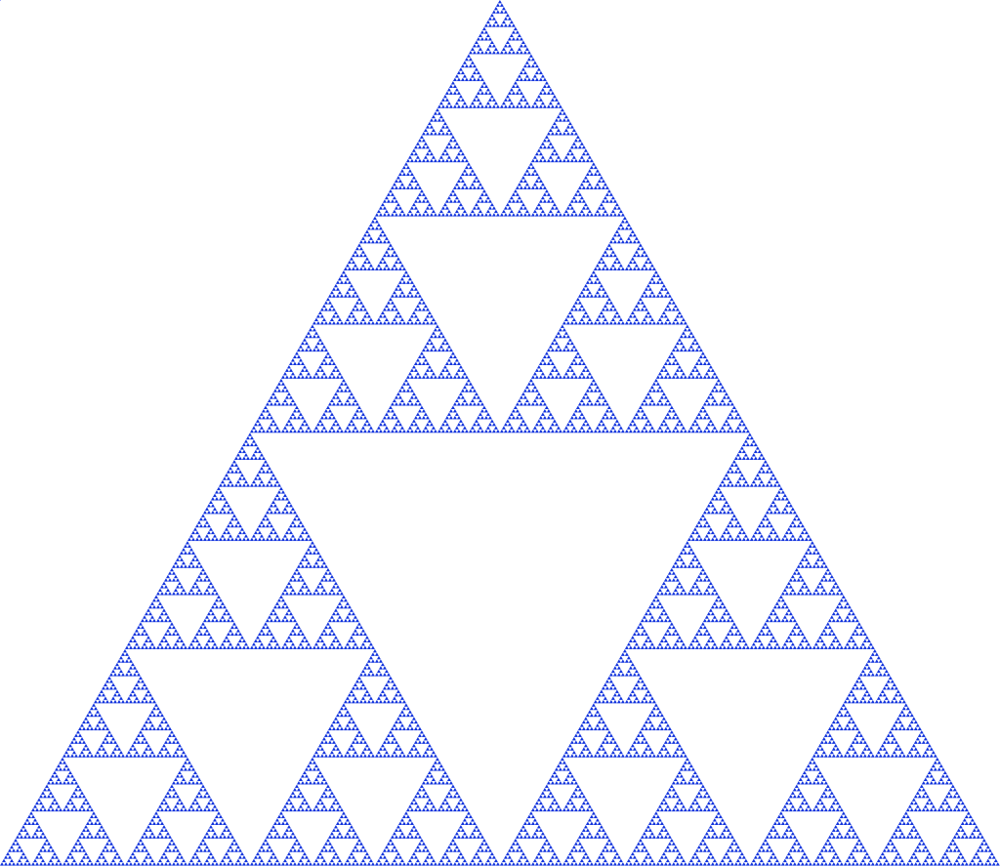

Welcome to the world of fractals!

This website is part of the Analysis on Fractals project, SPUR 2017. We studied the self-similar, symmetric Laplacians constructed with different IFS's instead of the standard IFS on both the Sierpinski Gasket and the interval. This website contains the various sets of data that we generated over the summer.
Contact Information
Robert Strichartz
Sizhen Fang
Dylan King
Seraphina Lee